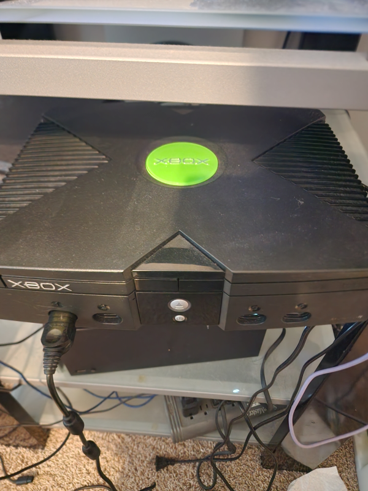

For specific games i want to play this year it would have to be:
For Once upon a Katamari, I was excited for it as it was the newest release releasing around fall last year
It is a game about rolling up objects into a giant ball and doing it as fast as possible.
The game due to that is relaxing along with the soundtrack of the game hyping whats going on in the game.
For Yakuza 0 I have been enjoying playing it but i want to get back into it to finish it.
Yakuza 0 is a Story-focused game, with brawler gameplay. usually punching money out of enemies.
It also has tons of minigames involving billiards, darts, mini car racing, etc.
for specific game consoles I own, i would probably revisit in the future including:
Here's a picture of the OG Xbox. This was a game console noted by the green xbox symbol up top.
The specifications of the console sometimes had Computer games of its time play on the Console.
It was one of the first consoles to have a Hard Disk Drive meaning it did not need memory cards to save data from games onto.
I was excited to replay it but also discover some games i did not play before on this retro console.
